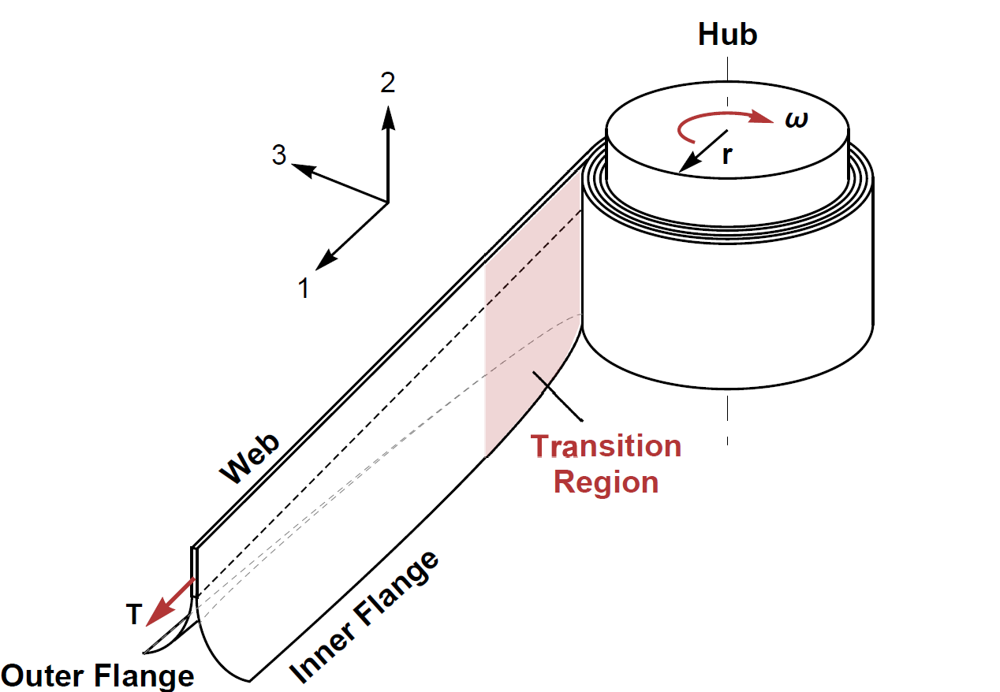
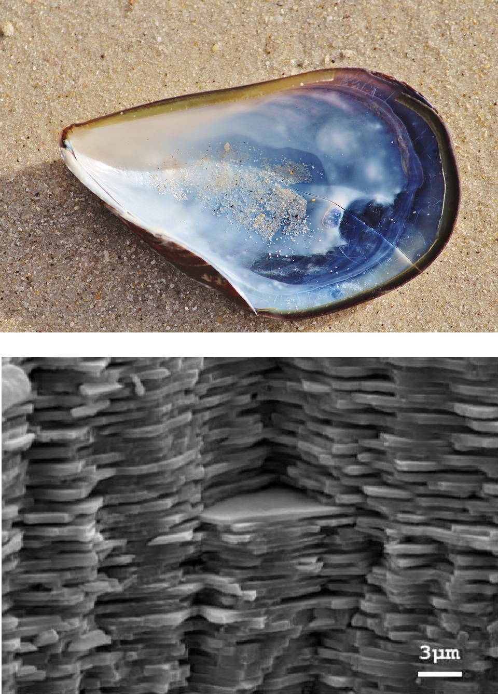
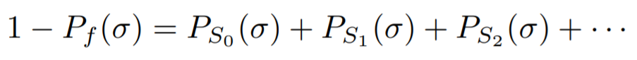
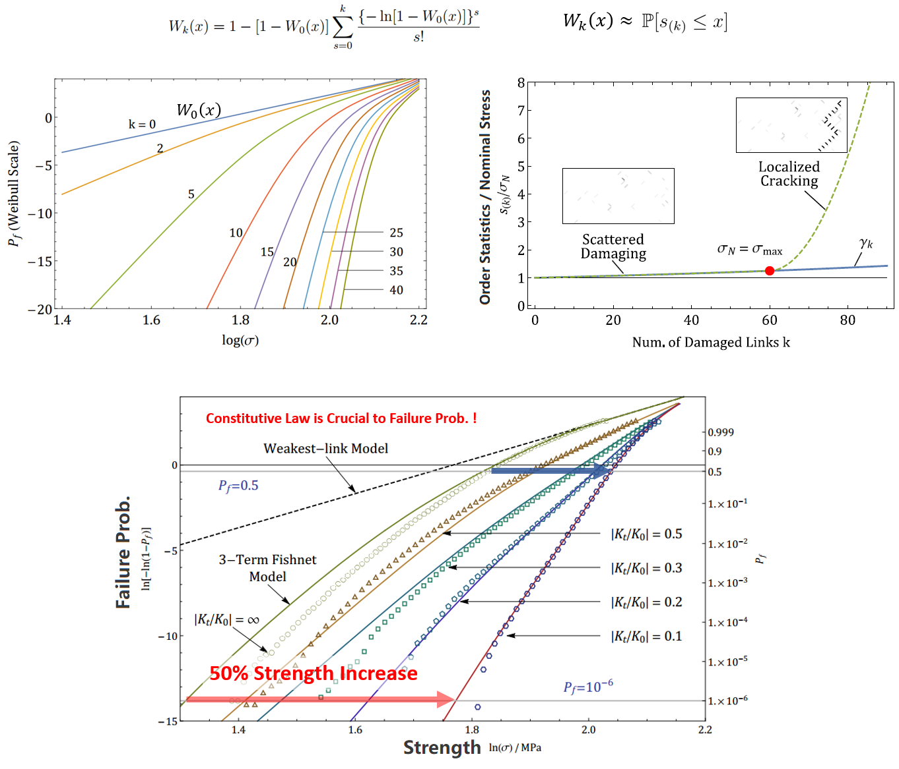

In this research, we study a type of seamed thin shell - Triangular Rollable And Collapsible (TRAC) longeron, which is widely used as lightweight deployable space structures to achieve high packaging efficiency while maintaining desirable structural performance. The longerons can be conveniently coiled around a hub during the packaging stage and be deployed after the payload is launched into space. In the current research, we study the propagating buckle appeared in the TRAC Longeron during the coiling process. The geometry of the TRAC longeron is shown in the following figure.It can be seen as two tape springs made of thin composite materials bonded at one edge. The bounded region is called the web, and the two branches of theunbounded parts are called the flanges. While being coiled, the inner flange is commonly found to buckle ahead of the coiled region,some of which even cause local stress concentrations and material damages.
 Nacre, also known as "mother-of-pearl", are widely found in nature. Its typical "brick-and-mortar" microstructure has inspired lots of robust man-made hierarchical materials. They can achieve high defect insensitivity and fracture toughness. This project studies the statistical strength distribution of the material. Strictly for statistical purposes, the microstructure of nacre is approximated by a diagonally pulled fishnet with quasibrittle links representing the shear bonds between parallel lamellae (or platelets).
The key idea of the analytical solution is to express the total structural survival probability as a series of survival probabilities corresponding to the disjoint failure events of exactly one link, two links, three links, etc. at the peak load.
These added survival probabilities are shown to greatly enhance the strength for the lower tail of the strength distribution (i.e. failure proability), compared to the weakest-link model. The analytical predictions of failure probability are verified by millions of Monte-Carlo simulations. There existed two basic, analytically tractable, statistical models for the strength of materials and structures: weakest-link model and fiber bundle model. The fishnet model is shown to be another analytically tractable model that bridges the above two.
[1] Luo, W. and Bažant, Z.P., 2017.
Fishnet Model for Failure Probability Tail of Nacre-like Imbricated Lamellar Materials.
Proceedings of the National Academy of Sciences, 114(49), pp.12900-12905.
[2] Luo, W. and Bažant, Z.P., 2017.
Fishnet Statistics for Probabilistic Strength and Scaling of Nacreous Imbricated Lamellar Materials.
Journal of the Mechanics and Physics of Solids, 109, pp.264-287.
For brittle materials like dry nacre, a few terms in the series expansion suffice to guarantee convergence. In this sense, the fishnet model series expansion can be seen as a perturbation from the weakest-link model. However, it is relatively hard to apply for quasibrittle materials whose links exhibits progressive postpeak softening of various steepness. More widely scattered damages occur before the peak load. This requires more higher-order terms to be considered. It is, however, very tedious to calculate them and their expressions vary for different geometry and loading conditions. To tackle this problem, the strength distribution of the softening fishnet is approximated by the order statistics of link strengths:
That is to say, it is no longer the weakest link but the k-th weakest link that determines the peak load of the whole structure. The order k reflects the extent of damages right before the maximum load, with it being in itself a discrete random variable. By adjusting the postpeak softening slope (brittleness) of the material, its failure probaility changes significantly, generating huge safety gains at the extreme lower tail of the strength distribution.
[1] Luo, W. and Bažant, Z.P., 2018. Fishnet Model with Order Statistics for Tail Probability of Failure of Nacreous Biomimetic Materials with Softening Interlaminar Links. Journal of the Mechanics and Physics of Solids, 121, pp.281-295.
To reach the extreme lower tail of a probability distribution by histogram testing, one would need millions of repetitions. An ulternative method to infer the material failure probability from experiments or Monte Carlo simulations is formulated. The solution relies on the median strength size effect, which is relatively easy to obtain through lab tests. It describes the change of nominal strength with increasing structure size. To derive the size effect relation, the geometric scaling of a rectangular fishnet is split into transverse and longitudinal scalings, for each of which a simple scaling rule for the median strength is established. Proportional combination of both then yields the two-dimensional geometric scaling and its size effect. Compared to the direct estimation via histogram testing, the size effect method requires only a few (typically about six) tests for each of three or four structure sizes to obtain a tight upper bound on the failure probability distribution.

[1] Luo, W. and Bažant, Z.P., 2019. Fishnet Statistical Size Effect on Strength of Materials with Nacreous Microstructure. Journal of Applied Mechanics, 86(8), p.081006.
The major takeaway of the fishnet statistics is that the connectivity of the microstructure of a material plays a determining role in its failure probability lower tail. Therefore, a carefully designed microstructure of a material enhances not only its mean strength but also its one-out-of-a-million quantile strength. In this project, we apply the theory of fishnet statistics to the the strength distributions of architected nanomaterials such as the octet-truss carbon nanolattices. We demonstrate that the octet truss system can be seen as the union of fishnets aligned in three mutually orthogonal directions, and that this three dimensional fishnet assembly of the octet-truss nanolattice further enhances its lower tail strength compared to the 2D fishnet truss system.
Video: strain field evolution (left) and damage evolution (right) for one random realization (plotted on undeformed configuration).
In shear failure, the reinforced concrete (RC) beam always develops, in a stable manner, a finite length crack before the ultimate load is reached. The critical crack tip location prior to peak load cannot sample a large volume of the material with random strength since its location is fixed by mechanics. Thus, the size effect on mean strength must be predominantly energetic and must follow the Type-2 size effect law (also called Bažant's size effect law). What remains unclear is the size effect of the coefficient of variation (CoV) of beam strength, which is important for anchoring the shear strength distribution and choosing the safety factor. In this study, we run thousands of simulations using Abaqus-Explicit with microplane model M7, each with a random input of material strength and Young's modulus for each finite element in the structure. Within a typical size range, the CoV of strength is found to decrease with the structure size when geometrically similar beams are compared. This size effect on the CoV is similar to that in ductile failure governed by Gaussian distribution of strength, and contrasts with that in brittle failures following the Weibull distribution, for which the CoV is size independnet. An analytical formula is proposed to characterize the size dependence of the strength CoV.
[1] Luo, W., Le, J.L., Rasoolinejad, M. and Bažant, Z.P., 2021. Coefficient of Variation of Shear Strength of RC Beams and Size Effect. Journal of Engineering Mechanics, 147(2), p.04020144.